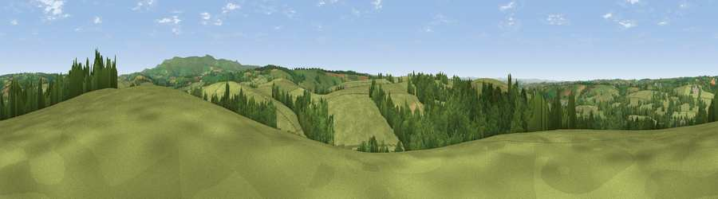

Viewpoint near Lewdown
#18845 in England · top 34% of its area beats it · near LewdownWhere it is
The exact computed spot (SX 46775 88775). Click the marker for map links.
The view, rendered

A 360° render of this exact spot computed from the terrain model, tree cover and land cover — summer colours, afternoon light, calibrated against photographs of famous viewpoints. Real trees, hedges and buildings will differ in detail.
The panorama
Grey silhouette: terrain skyline in each direction (720 bearings, Earth curvature and refraction included). Dashed green: skyline with trees (+15 m) and buildings (+8 m) as obstacles. Blue strip: how far the ground is visible on each bearing.
Where the view opens
Wedge length = distance to the farthest visible ground on that bearing (vegetation-aware). Rings at 10, 25 and 50 km.
What fills the view
64% grassland · 35% woodland · 1% cropland
Angular shares of the visible panorama (visual magnitude), not map area. Landscape diversity 0.32 (0–1 Shannon).
Key numbers
More beautiful places nearby
The staircase of upgrades: each row has a higher view potential than everything closer. Driving times are estimates from straight-line distance, calibrated against real road routing — check an actual route before setting out.
| Place | Direction | Drive | Score |
|---|---|---|---|
| Viewpoint near Lewdown | SSE · 3 km | ~8 min | 58.8 |
| Viewpoint near Bratton Clovelly | NNE · 7 km | ~14 min | 60.9 |
| Great Nodden | E · 7 km | ~15 min | 72.4 |
| Sourton Tors | E · 8 km | ~15 min | 74.8 |
| Viewpoint near Sourton | E · 8 km | ~17 min | 75.7 |
| Great Links Tor | ESE · 8 km | ~17 min | 77.8 |
| Yes Tor | E · 11 km | ~21 min | 78.5 |
| Kit Hill | SSW · 20 km | ~34 min | 80.3 |
50.67841, -4.17008 · source: screening · position refined by local search. Computed location — check access rights before visiting.